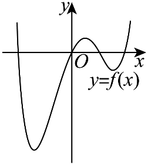

示例学校高二数学周测（5） Q6
题目
6． 已知函数f(x)=ln(e^2x+1)-x，若x∈[1,2]时，关于x的不等式f(2x+1)<f(x+a)恒成立，则实数a的取值范围为（ ）
A．(-7,-4)∪(2,3) B．(-7,-3)∪(2,4) C．(-∞,-7)∪(3,+∞) D．(-∞,-4)∪(2,+∞)
答案与解析

6．C由题意可得f^'(x)=(2e^2x)/(e^2x+1)-1=(e^2x-1)/(e^2x+1)，令f^'(x)=0解得x=0，当x<0时f^'(x)<0，f(x)单调递减，当x>0时f^'(x)>0，f(x)单调递增，又因为f(-x)=ln((1)/(e^2x)+1)+x=ln((1+e^2x)/(e^2x))+x=ln(1+e^2x)-x=f(x)，所以f(x)为偶函数，大致图象如下，若x∈[1,2]时，关于x的不等式f(2x+1)<f(x+a)恒成立，则|2x+1|<|x+a|对x∈[1,2]恒成立，所以|x+a|>2x+1，则x+a>2x+1或x+a<-2x-1，所以a>x+1或a<-3x-1对x∈[1,2]恒成立，所以a>(x+1)_max=3或a<(-3x-1)_min=-7，所以实数a的取值范围为(-∞,-7)∪(3,+∞)结构化摘要
{
"question_id": "szzx2024g2week5_q006",
"answer": "C",
"assets": [
{
"id": "img001",
"type": "image",
"rel_id": "rId7",
"source": "word/media/image1.png",
"path": "assets/szzx2024g2week5_q006_image_01.png"
}
],
"ole_objects": [],
"extraction": {
"source_paragraph_range": [
14,
15
],
"solution_paragraph_range": [
9,
9
],
"formula_count": 35,
"image_count": 1,
"ole_count": 0,
"quality_flags": [
"contains_images",
"contains_omml"
]
}
}